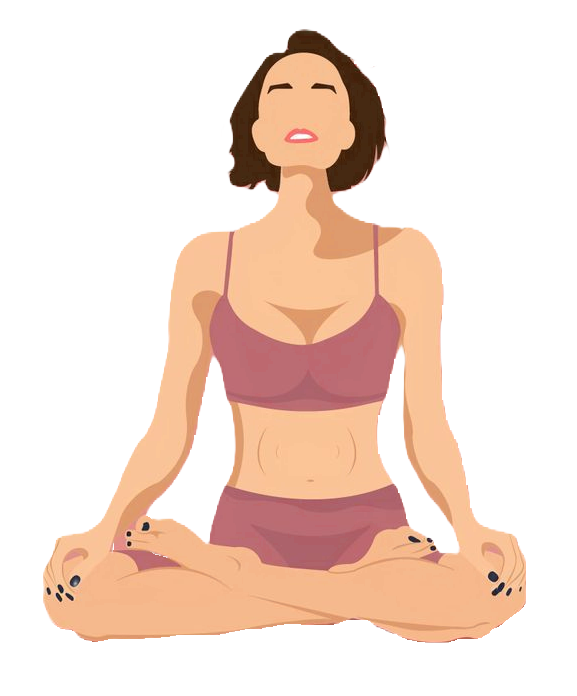

El perro boca abajo o en yoga Adho Mukha Svanasana
- Colócate en 4 apoyando manos y rodillas sobre el suelo.
- Lleva tus manos un poco más adelante de la altura de tus hombros,
ábrelas bien y apunta los dedos de los pies en el suelo.
- Empujando con tus manos hacia el suelo, eleva la pelvis y lleva el
peso hacia atrás, de manera que puedas estirar brazos y
espalda apuntando las nalgas hacia arriba. La cabeza está relajada,
siguiendo la línea de la columna.
- Progresivamente y según tu flexibilidad, podrás ir extendiendo las piernas,
dirigiendo los talones hacia el suelo, aunque no lleguen a tocar. Si al
extender las piernas, se pierde la extensión de la espalda, es mejor
realizar la variante con las rodillas flexionadas.
- Mantén la postura durante 5 respiraciones y sal de la postura llevando
las rodillas al suelo. Puedes entrar en la postura de Balasana o el
niño para descansar.
La postura del Loto en yoga Padmasana

- Comienza sentada en la esterilla de yoga con las piernas
estiradas y relajadas. Sujeta tu pierna derecha con los
brazos y lleva la espinilla a la altura del pecho.
Tu rodilla derecha debe estar alineada con la espinilla
y el pie, paralelos al suelo. Una vez ahí, alarga el pecho
y haz pequeños movimientos para estirar el glúteo y
preparar las caderas.
- Poco a poco, apoya tu pie derecho sobre el muslo izquierdo
y acércalo a la ingle y deja caer tu rodilla derecha sin
forzarla. Si es necesario, coloca unos cojines debajo
de la rodilla para poder relajarla de forma cómoda.
- Con la pierna derecha sobre la ingle, ya puedes colocar
el otro pie justo debajo de tu muslo derecho para
entrar en el medio loto. Repite el proceso con la otra
pierna y practica hasta que consigas tener ambas
rodillas sobre el suelo. Sobre todo, ten paciencia y no fuerces.
La postura del Arbol o en yoga Vrikshasana
- Empieza en tadasana o la postura de la montaña hasta que
sientas un completo equilibrio de tu cuerpo.
- Flexiona la rodilla derecha y desplaza tu peso a
la pierna izquierda.
- Agarra tu pie izquierdo y coloca la planta del pie en el
interior del muslo derecho, en una altura que sientas cómoda,
más arriba de la rodilla o más bajo si te resulta difícil.
- Vuelve a colocarte bien, hasta que sientas que tu pelvis
está alineada, encima de tu pie derecho.
- Junta las manos delante del pecho y pon los pulgares
sobre el esternón.
- Fija tu mirada en un punto. Esta técnica se llama Drishti.
Sirve para que la mente se enfoque, ya que te ayuda a lograr
más equilibrio y concentración.
- Cuando te sientas en equilibrio, inhala y levanta las manos
encima de la cabeza.
La postura del Sauce o en yoga Parivrtta Janu Sirsasana
- Primero siéntate en tu esterilla en Dandasana. Es decir,
con las piernas estiradas al frente, isquiones enraizados,
columna recta y hombros relajados.
- A continuación, dobla la rodilla derecha procurando no
perder la alineación de la pierna izquierda, estira tu columna,
proyecta tu coronilla hacia el cielo y lleva la palma del pie
derecho hacia el interior del muslo izquierdo enraizando
bien la cadera.
- Después gira el tronco hacia la derecha procurando que tu
ombligo y pecho miren hacia esa rodilla. El costado izquierdo
debes mantenerlo alienando con la pierna izquierda.
Apoya la mano derecha en tu cadera derecha y coloca la mano
izquierda en la pierna izquierda. A continuación, al exhalar
flexiona el tronco lateralmente y extiendelo sobre la pierna
izquierda que tienes estirada y extiende el brazo izquierdo
hacia el pie, sujetándolo con el pulgar hacia arriba y los dedos
sobre la planta del pie.
- Apoya el codo flexionado en el suelo delante de la pierna
izquierda, para que te sirva de palanca y así ayudarte a
colocar el lado izquierdo del tronco sobre el muslo. Extiende
el brazo derecho por encima de la cabeza proyectándolo bien
sobre el torso y estirando los dedos de la mano para mejorar
tu alineación. No dejes que el torso se hunda. Y si no tienes
problemas de cervicales mira hacia arriba y mantén la postura.
La postura de la Cobra o en yoga Bhujangasana
- Túmbate en el suelo boca abajo apoyando la frente en el suelo
y mantén las piernas y los pies juntos y estirados.
- Coloca las palmas de las manos debajo de los hombros con los
dedos apuntando hacia delante.
- Inspira y sube ligeramente la cabeza, el pecho y el abdomen
apoyando bien las palmas de las manos en el suelo para
dar integridad y alinear la postura.
- Vigila de no subir los hombros hacia las orejas.
- Procura no tensar los hombros y lleva tu mirada hacia
el cielo alargando el cuello pero sin colapsar las cervicales
para evitar lesiones. Si este es tu caso, te recomiendo
este artículo sobre yoga para cervicales.
- A su vez, presiona el hueso púbico contra el suelo
manteniendo el coxis hacia dentro y presiona los extremos
de los pies contra el suelo.
- Al expirar desciende lentamente, manteniendo la mirada
hacia el cielo y poco a poco ves apoyando abdomen,
pecho, barbilla, nariz hasta llevar tu frente al suelo.
La postura del Tigre o en yoga Vyaghrasana
- Comienza desde la postura de los cuatro puntos; con
las manos y las rodillas sobre el suelo. Manos debajo
de los hombros y rodillas debajo de las caderas.
La espalda plana y de manera neutral.
- Extiende una pierna hacia detrás, de forma que el
estiramiento se siente hasta el talón.
- Al mismo tiempo, extienda el brazo del lado opuesto
a esa pierna; al frente. De manera que sienta
que el lado del cuerpo se esta estirando hasta
las yemas de los dedos. Respirando, lleve el brazo
a la pierna que esta levantada por encima de su cuerpo.
- Con la exhalación regrese a la posición neutral.
Repita en el lado opuesto.
La postura de la Pinza o en yoga Utthanasana
- De pie, desde la postura de la montaña, inhala
mientras abres y elevas los brazos hasta juntar
las palmas por encima de la cabeza.
- Activa tus músculos intercostales y crece
desde el torso.
- A partir de las caderas flexiona el cuerpo hacia
delante y alarga los brazos al frente, lejos del coxis.
Si tienes una espalda fortalecida a nivel muscular,
mantén las piernas rectas mientras te inclinas
hacia adelante apuntando con el pecho hacia las rodillas.
Lleva las manos al suelo a ambos lados de los pies
o sobre los tobillos y activa la cara interna de
tus muslos.
- Si tu espalda y piernas aún no son tan flexibles,
y no llegas con las manos al suelo, flexiona
ligeramente las rodillas y estíralas poco a poco
con cada respiración mientras apuntas con el coxis
hacia arriba.
- Si tocas el suelo con facilidad, “camina” con las
manos hacia atrás y presiona las palmas contra
el suelo. También puedes agarrar con cada mano
tus talones y llevar los antebrazos detrás de
los gemelos.
- Estira la columna y el cuello, mete el mentón
ligeramente hacia la garganta y apunta con la
coronilla de la cabeza hacia el suelo.
- Permaneces en esta postura durante varias respiraciones
prolongadas. Puedes cerrar los ojos visualizando como
tu columna se relaja mientras la gravedad acerca
todavía más tu coronilla a la tierra.
- Contrae la parte inferior del abdomen y mueve las
caderas hacia adelante para inhalar y subir.
Mantén la extensión de la columna mientras elevas el
tronco hasta quedar de pie.
La postura del Triángulo Extendido o en yoga Utthita Trikonasana
- Si comienzas con la pierna derecha delante,
asegúrate de girar el pie izquierdo 90 grados, de forma
que quede perpendicular a tu pie derecho. Haz lo mismo
si tienes la pierna izquierda delante.
- Apoya tu mano derecha sobre el muslo (o la espinilla,
si el cuerpo te lo pide) y, desde ahí, lleva la
mirada hacia tu mano izquierda. Recuerda que una
postura es asana si es estable y cómoda.
- Si practicas yoga para principiantes o te cuesta
mantener el equilibrio, apoya la mano queda más
cerca del suelo sobre un bloque de corcho. A medida
que domines la variante, aleja los pies unos centímetros
de la pared. Esto te servirá para observar qué partes
de tu cuerpo necesitas activar para mantener la postura
sin ayuda.
- Y, sobre todo, no olvides respirar profundamente.
Eka Pada Adho Mukha Svanasana con apertura de cadera
- Colócate en 4 apoyos, sobre manos y rodillas.
- Lleva tus manos un poco más adelante de la altura
de tus hombros, ábrelas bien y apuntala los dedos de
los pies en el suelo.
- Empujando con tus manos hacia el suelo, eleva la pelvis
y lleva el peso hacia atrás, de manera que puedas
estirar brazos y espalda apuntando las nalgas hacia arriba.
La cabeza está relajada, siguiendo la línea de la columna.
- Progresivamente con una pierna elevada para abrir de cadera.
Al elevar la pierna, trata de colocar una cadera sobre
la otra, de manera que buscas elevar el pie hacia el techo,
y desde ahí, flexiona la rodilla llevando el pie hacia la nalga.
Una vez construidas las piernas, observa si tu pecho se ha
abierto y trata de recolocar de nuevo tus hombros dirigiendo
el pecho hacia el centro de la esterilla.
- Mantén la postura durante 5 respiraciones y sal de la
postura llevando las rodillas al suelo. Puedes entrar en
la postura de Balasana o el niño para descansar.
La postura del Bailarín o en yoga Natarajasana
- Ve doblando la pierna izquierda hacia atrás, acercando
el talón a las nalgas hasta que tu pie te quede al
alcance de la mano izquierda. Con esa mano, sujétate el
tobillo por la parte exterior. La pierna derecha, con
la que te apoyas, debe permanece extendida.
- Tira de la pierna alzada hacia atrás de modo que tu pie
izquierdo quede orientado al techo.
- Sigue tirando de tu pie izquierdo hacia atrás y hacia
arriba hasta que tu muslo derecho quede paralelo al suelo
- Abre el pecho, intentando que tu espalda trace un arco
tan amplio como sea posible.
- Extiende el brazo derecho hacia el frente.